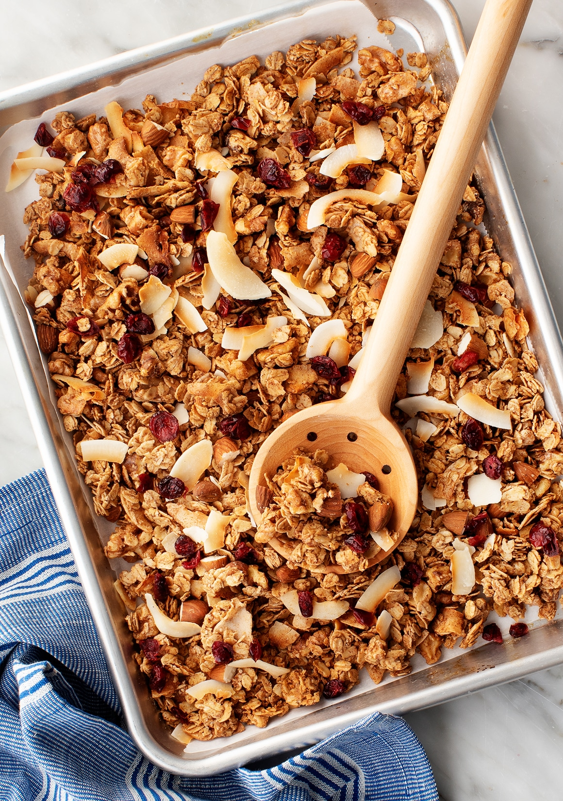

granola met yoghurt
Granola is een goede manier om allerlei soorten gedroogde vruchten, noten en zaden te eten. Vanwegen het vleugje kaneel is het heel lekker en met koude melk of yoghurt is het een perfect ontbijt.
Granola is een goede manier om allerlei soorten gedroogde vruchten, noten en zaden te eten. Vanwegen het vleugje kaneel is het heel lekker en met koude melk of yoghurt is het een perfect ontbijt.
verwarm de over voor op 180 graden. Doe de droge ingrediënten, inclusief kokos en kaneel, maar ook zonder de gedroogde vruchtjes, in een braadslee. Roer alles goed door elkaar en spreid regelmatig. Sprenkel er de ahornsiroop en een beetje olijolie over en roer nogmaals. Zet de braadslee 25-30 minuten in de voorverwarmde oven. Haal hem ongeveer elke 5 minuten uit de oven, roer alles door elkaar. Hak terwijl het notenmengsel in de oven staat de grotere gedroogde vruchten in stukjes. Haal de granola wanneer die mooi goudbruin is uit de oven, meng de vruchtjes erdoor en laat het mengesel afkoelen.
glutenvrije rode pasta pesto is een heerlijk hoofdgerecht. Glutenvrije pasta is voor mensen met coeliakie echt een uitkomst, want pasta is een van de dingen die je erg kan missen.
kook de pasta volgens de gebruiksaanwijzing op verpakking. Bak de kipfiket gaar met de gesnipperde uitjes. Rooster ondertussen ook de pijnboom pitten. Roer de pesto en de kip door de pasta. Voeg op het laatst de tomaten toe en garneer het gerecht met de rucolla en pijnboom pitten.
Kruidkoek is typisch nederlands, deze is heel eenvoudig te maken. Een lekker recept om te maken als je visite krijgt!
Verwarm de oven voor op 160 graden. Vet een cakevorm in met boter. Doe alle ingredië voor het beslag in een kom en mix deze tot een glad beslag. Giet het beslag in de vorm en bak de kruidkoek in 65-85 minuten gaar. Test dit met een satéprikker: zit er geen beslag meer aan als je de prikker uit de koek haalt, dan is deze gaar. Haal de kruidkoek uit de vorm en laat deze afkoelen op een rooster.